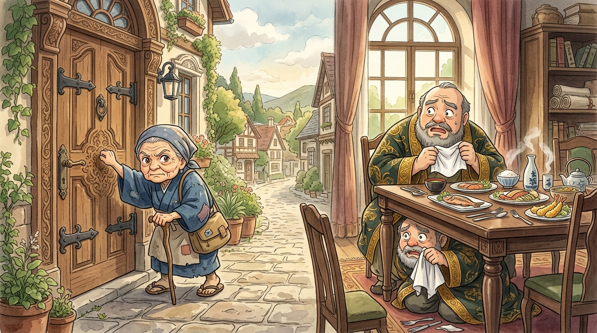
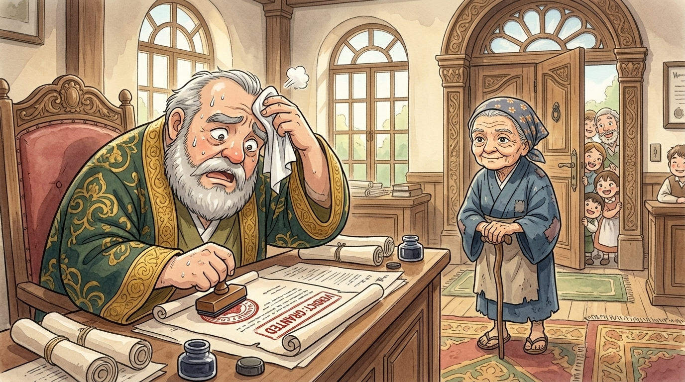

One day Jesus told his friends a parable with a very clear purpose — Luke tells us exactly what it was: "to show them that they should always pray and never give up."1 And being the greatest storyteller ever, he made it funny. Welcome, everyone, to the strangest contest in town: the unstoppable force versus the immovable judge.
In this corner: the worst judge in history
In a certain town there lived a judge who — and this is the Bible's own description — "neither feared God nor cared what people thought." Imagine that on a business card. A judge is supposed to protect the weak and put wrongs right. This judge protected exactly one thing: his own comfortable life.
9:00 — Ignore cases. 10:30 — Snack. 11:00 — Ignore more cases. 12:00 — Long peaceful lunch. 2:00 — Nap. 4:00 — Go home. Wonderful. Don't change a thing.
And in this corner: the widow
In the same town lived a widow. Now, in that world a widow with no family to defend her was just about the most powerless person there was — no money for bribes, no important friends, nobody to speak for her.2 Someone had cheated her, and there was exactly one door she could knock on: the judge's.
So she knocked. And out came the five words she would soon make famous:
The judge looked her up and down — no money, no connections, no threat — and waved her away. Case ignored. NEXT!
Except… there was no next. Because the next morning, she was back.

The siege begins
She came to the court. "Grant me justice against my opponent!" She came to his house. "Grant me justice!" She was outside the baker's when he bought his bread. "Justice!" She was at the town gate when he strolled to lunch. "JUSTICE!" Rainy days. Hot days. Market days. Rest days. She. Kept. Coming.
Times the widow has asked: lost count · Times the judge has said yes: 0 · Judge's peaceful lunches this month: 0 · Widow's plans to quit: absolutely none.
And slowly, something amazing happened inside the world's worst judge. Not kindness — don't worry, he didn't suddenly become nice. Something much funnier. Listen to him talking to himself:
"I don't fear God, and I don't care what anybody thinks. BUT — this widow! She's wearing me out! If I don't give her justice she will keep coming FOREVER. Fine! FINE! She wins! Somebody get her case file — she shall have her justice, just let me eat my lunch in peace!"3

And so the most powerless person in town defeated the most stubborn judge in town — armed with nothing but persistence. The cheater had to give back what he took. The town talked about it for years.
The point — and the surprise
Then Jesus leaned in for the lesson, and it comes with a twist. You might think the lesson is "God is like the judge — pester Him long enough and He'll give in." No! Jesus' point is the exact opposite. Listen:
Do you see the trick? It's an argument from the worst to the best. If a lazy, selfish judge who cares about nobody will answer a stranger just because she keeps coming — how much more will a loving Father answer His own children, whom He adores?4 God isn't annoyed by our asking. He invites it — day and night.
Then Jesus ended with a question that floats off the last line of the story like a soap bubble: "Yet when the Son of Man comes, will he find faith on the earth?" In other words: will He find people still praying, still trusting, still knocking — people like the widow?
So here's your takeaway, straight from the champion herself: when your prayers seem to bounce off the ceiling, don't quit. God is not a grumpy judge you have to wear down — He's a good Father who hears every single knock. Keep praying. Keep trusting. Keep knocking. The widow would. ✊